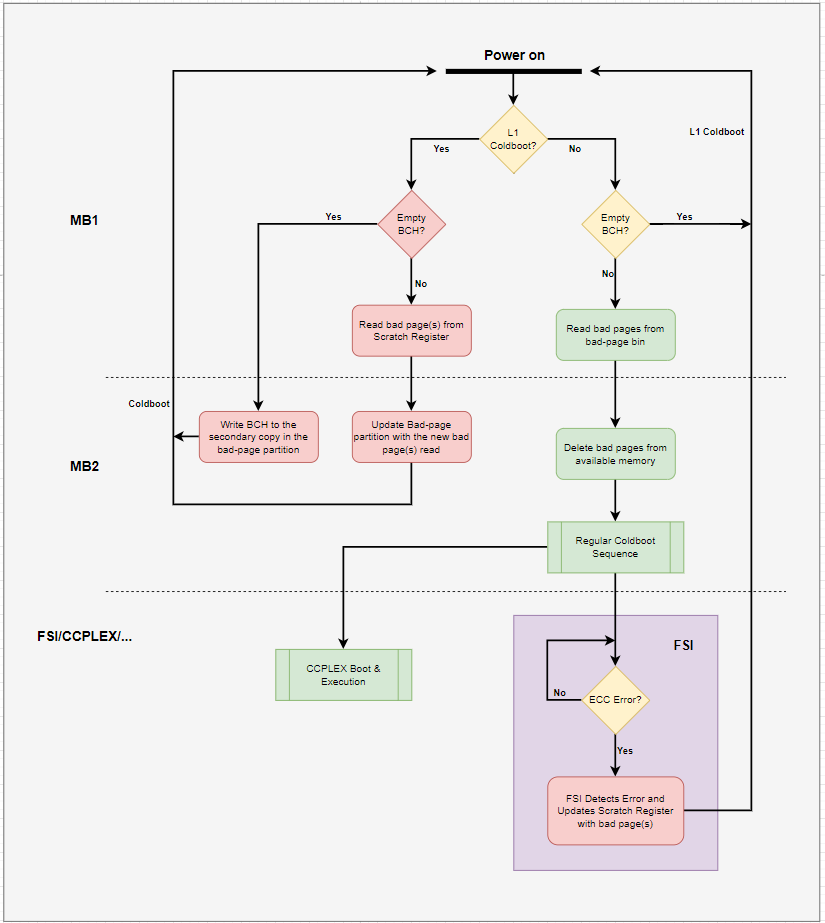

DRAM-ECC#
Error correction code (ECC) protection provides a means to detect and correct errors within DRAM. Enabling DRAM-ECC ensures that for every 32 bytes of data, 2 bytes are allocated for ECC. This mechanism works by calculating and writing 2 ECC bytes alongside each data byte write. Similarly, during data reads, the 2 ECC bytes are read to verify data integrity, ensuring the stored ECC matches the calculated ECC. Any discrepancies are flagged by the Memory Subsystem (MSS) hardware.
Note
Activating ECC protection reduces the available memory for regular use to 7/8 of the total due to allocating additional memory for ECC data.
Components#
Hardware#
The hardware components involved in the DRAM-ECC feature are listed below:
Hardware Safety Manager (HSM): The HSM captures errors triggered by different hardware components and forwards them to the FSI firmware.
Memory Controller (MC): For every write to the DRAM, the memory controller hardware calculates the ECC bits and stores them in the reserved portion of DRAM. For every read from the DRAM, the memory controller hardware calculates the ECC bits and compares them to the stored ECC bits. In case of a discrepancy, an interrupt is generated to the HSM hardware block which is handled by the FSI firmware. The memory controller hardware corrects all the single bit errors and detects the double bit errors.
Software#
The software components involved in the DRAM-ECC feature are listed below:
Bad Page Partition: On detection of a double bit error, the FSI firmware reboots the system and informs MB1 to exclude the bad page from available memory. MB1 stores this bad page address in the bad page partition. A bad page partition is a dedicated partition in QSPI that stores the list of bad pages. It is not part of any boot chain. During cold boot, MB1 uses entries from this partition to skip these pages while allocating carveouts. UEFI also uses these entries to skip these pages in the kernel’s physical memory handling.
Functional Safety Island (FSI): The FSI firmware handles all the interrupts collected by the HSM. The FSI firmware only has the required firewall settings to access the ECC status registers. In case of a single bit error, the FSI firmware takes no action as the memory controller hardware corrects the error while it is in transit. In case of a double bit error, the FSI firmware calculates the DRAM page address where the error is reported, caches it, and reboots for the bootloader components to retire the bad page.
Bootloader (MB1/MB2): The bootloader components MB1 and MB2 detect the bad pages identified by the FSI firmware and add them to the list of bad pages in the bad page partition. During the memory allocation by MB1, the available DRAM is cleaned by removing the bad pages from the bad page partition. This available memory is then propagated to subsequent boot components (MB2, UEFI, kernel) for their respective usage.
Stages#
The DRAM-ECC feature is comprised of the following stages:
DRAM Init Scrub: During the ECC workflow in boot stages MB1 and MB2, the entire DRAM (excluding the MB1 and MB2 carveouts) is written. This process populates the ECC bits for the hardware to function properly.
Boot and Power Management Processor (BPMP) Patrol Scrub: The BPMP R5 scans the DRAM continuously at runtime, fixing any encountered single bit errors. This measure prevents the unlikely scenario of a second single bit error from impacting the same word and causing an uncorrectable double bit error.
Single Bit Error (SBE): This occurs when a single bit flips anywhere in the data or ECC. The memory controller hardware has the ability to correct the data while in transit without any software intervention. Note that the bit in the DRAM will remain flipped in this case. It would be corrected in transit on every read until either new data has been written to that location or BPMP Patrol Scrubbing has fixed the error in the DRAM.
Double Bit Error (DBE): This occurs when two bits flip anywhere in the data or ECC. Double bit errors are uncorrectable. The FSI firmware captures the location of this error, caches it for retirement in MB1/MB2, and then resets the device.
Page Retirement Flow: The page retirement flow can be activated by uncorrectable ECC errors or during the first boot after flashing.

Verification Steps#
This section contains steps that pertain to verification of the DRAM-ECC feature. This process consists of the bootloader injecting errors into memory locations that are later read from the Linux command line.
Common Steps#
The following steps are needed for testing of both SBEs and DBEs.
Enable error injection and flash the build:
1# Enable ECC Injection flag 2cd <Linux_for_Tegra> 3vim bootloader/tegra234-mb1-bct-dram-ecc-l4t.dtsi 4# Enable the injection configuration 5enable_dram_error_injection = <1>; 6# flash the board
MB1 reads the bad-page binary. All memory is assigned to the ECC region.
1[0000.401] I> Task: Load Page retirement list 2[0000.405] I> Slot: 0 3[0000.407] I> Binary[4] block-125952 (partition size: 0x80000) 4[0000.413] I> Binary name: DRAM bad page list (P) 5[0000.417] I> Size of crypto header is 8192 6[0000.421] I> Size of crypto header is 8192 7[0000.425] I> strt_pg_num(125952) num_of_pgs(16) read_buf(0x40050000) 8[0000.431] I> BCH of DRAM bad page list (P) read from storage 9[0000.437] I> BCH address is : 0x40050000 10[0000.441] I> component binary type is 4 11[0000.444] I> DRAM bad page list (P) header integrity check is success 12[0000.451] I> Binary magic in BCH component 0 is BINF 13[0000.456] I> component binary type is 4 14[0000.459] I> component binary type is 4 15[0000.463] I> Size of crypto header is 8192 16[0000.467] I> component binary type is 4 17[0000.471] I> strt_pg_num(125968) num_of_pgs(8) read_buf(0x40040000) 18[0000.477] I> DRAM bad page list (P) binary is read from storage 19[0000.483] I> DRAM bad page list (P) binary integrity check is success 20[0000.489] I> Binary DRAM bad page list (P) loaded successfully at 0x40040000 (0x1000) 21[0000.499] I> Task: SDRAM params override 22[0000.503] I> Task: Save mem-bct info 23[0000.506] I> Task: Carveout allocate 24[0000.510] I> RCM blob carveout will not be allocated 25[0000.515] I> Update CCPLEX IST carveout from MB1-BCT 26[0000.519] I> ECC region[0]: Start:0x80000000, End:0xe80000000 27[0000.525] I> ECC region[1]: Start:0x0, End:0x0 28[0000.529] I> ECC region[2]: Start:0x0, End:0x0 29[0000.534] I> ECC region[3]: Start:0x0, End:0x0 30[0000.538] I> ECC region[4]: Start:0x0, End:0x0 31[0000.542] I> Non-ECC region[0]: Start:0x0, End:0x0 32[0000.547] I> Non-ECC region[1]: Start:0x0, End:0x0 33[0000.551] I> Non-ECC region[2]: Start:0x0, End:0x0 34[0000.556] I> Non-ECC region[3]: Start:0x0, End:0x0 35[0000.561] I> Non-ECC region[4]: Start:0x0, End:0x0
Record the carveout 49 base address.
1[0000.795] I> allocated(CO:50) base:0xe2c600000 size:0x200000 align: 0x100000 2[0000.802] I> allocated(CO:52) base:0xe2cdc0000 size:0x30000 align: 0x10000 3[0000.808] I> allocated(CO:48) base:0xe2cda0000 size:0x20000 align: 0x10000 4[0000.815] I> allocated(CO:69) base:0xe2cd80000 size:0x20000 align: 0x10000 5[0000.822] I> allocated(CO:49) base:0xe2cd70000 size:0x10000 align: 0x10000
Single Bit Error (SBE) Testing#
A single bit error is injected at address <Carveout 49 base> + 0x1000. Read that data from the kernel console.
ubuntu@jetson:~$ sudo ./devmem2 0xe2cd71000 w
Read the external memory controller channel status registers one by one from FSI-console to find the channel where ECC SBE count is increased. The bits 8:15 save the count of the SBE occurrences.
1FSI-SHELL>readmemory 0x02c70ac4 220000000 3FSI-SHELL>readmemory 0x02c80ac4 420000000 5FSI-SHELL>readmemory 0x02c90ac4 620000000 7FSI-SHELL>readmemory 0x02ca0ac4 820000000 9FSI-SHELL>readmemory 0x02cb0ac4 1020000000 11FSI-SHELL>readmemory 0x02cc0ac4 1220000000 13FSI-SHELL>readmemory 0x02cd0ac4 1420000000 15FSI-SHELL>readmemory 0x02ce0ac4 1620000000 17FSI-SHELL>readmemory 0x01780ac4 1820010100 **← Example only;** 19FSI-SHELL>readmemory 0x01790ac4 2020000000 21FSI-SHELL>readmemory 0x017a0ac4 2220000000 23FSI-SHELL>readmemory 0x017b0ac4 2420000000 25FSI-SHELL>readmemory 0x017c0ac4 2620000000 27FSI-SHELL>readmemory 0x017d0ac4 2820000000 29FSI-SHELL>readmemory 0x017e0ac4 3020000000 31FSI-SHELL>readmemory 0x017f0ac4 3220000000
Double Bit Error (DBE) Testing#
A double bit error is injected at address <Carveout 49 base> + 0x8000. Read that data from the kernel console.
ubuntu@jetson:~$ sudo ./devmem2 0xe2cd78000 w
FSI triggers L1 Cold-boot and MB2 enters DRAM-ECC mode. Refer to the above diagram for the detailed flow of DRAM-ECC. Once the DRAM-ECC bad page update completes, the corresponding print will be seen on the console.
1I> MB2 (version: 0.0.0.0-t234-54845784-c6a05a9f) 2I> t234-A01-1-Silicon (0x12347) 3I> Boot-mode : DRAM ECC 4... 5... 6I> Read back verify success for primary and secondary blocks 7I> Task: DRAM ECC Mode PMC Reset 8I> Triggering PMC_RESET
In the next boot cycle, MB1 reads the bad page partition and retires the bad page.
1[0000.480] I> DRAM bad page list (P) binary is read from storage 2[0000.485] I> DRAM bad page list (P) binary integrity check is success 3[0000.492] I> Binary DRAM bad page list (P) loaded successfully at 0x40040000 (0x1000) 4[0000.502] I> bad page addr 0: 0xe2cd70000 5[0000.506] I> Task: SDRAM params override 6[0000.510] I> Task: Save mem-bct info 7[0000.513] I> Task: Carveout allocate 8[0000.517] I> RCM blob carveout will not be allocated 9[0000.521] I> Update CCPLEX IST carveout from MB1-BCT 10[0000.526] I> ECC region[0]: Start:0x80000000, End:0xe80000000 11[0000.532] I> ECC region[1]: Start:0x0, End:0x0 12[0000.536] I> ECC region[2]: Start:0x0, End:0x0 13[0000.540] I> ECC region[3]: Start:0x0, End:0x0 14[0000.545] I> ECC region[4]: Start:0x0, End:0x0 15[0000.549] I> Non-ECC region[0]: Start:0x0, End:0x0 16[0000.553] I> Non-ECC region[1]: Start:0x0, End:0x0 17[0000.558] I> Non-ECC region[2]: Start:0x0, End:0x0 18[0000.563] I> Non-ECC region[3]: Start:0x0, End:0x0 19[0000.567] I> Non-ECC region[4]: Start:0x0, End:0x0
The carveout 49 address shifts to avoid the previously recorded bad page.
1[0000.808] I> allocated(CO:52) base:0xe2cdc0000 size:0x30000 align: 0x10000 2[0000.815] I> allocated(CO:48) base:0xe2cda0000 size:0x20000 align: 0x10000 3[0000.822] I> allocated(CO:69) base:0xe2cd80000 size:0x20000 align: 0x10000 4[0000.829] I> allocated(CO:49) base:0xe2cd60000 size:0x10000 align: 0x10000 ← Was previously 0xe2cd70000
The kernel memory map correspondingly excludes the bad page.
1[ 0.000000] node 0: [mem 0x0000000080000000-0x00000000fffdffff] 2[ 0.000000] node 0: [mem 0x00000000fffe0000-0x00000000ffffffff] 3[ 0.000000] node 0: [mem 0x0000000100000000-0x0000000e18f95fff] 4[ 0.000000] node 0: [mem 0x0000000e18f96000-0x0000000e1922bfff] 5[ 0.000000] node 0: [mem 0x0000000e1922c000-0x0000000e2670ffff] 6[ 0.000000] node 0: [mem 0x0000000e26710000-0x0000000e2864ffff] 7[ 0.000000] node 0: [mem 0x0000000e28650000-0x0000000e2c5fffff] 8[ 0.000000] node 0: [mem 0x0000000e2c600000-0x0000000e2c7fffff] 9[ 0.000000] node 0: [mem 0x0000000e2c800000-0x0000000e2cd5ffff] ← 10Does not contain 0xe2cd60000 and 0xe2cd70000 pages 11[ 0.000000] node 0: [mem 0x0000000e32000000-0x0000000e33ffffff]